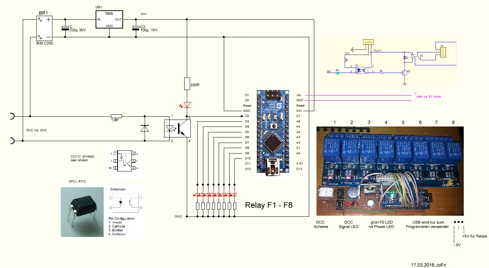

DCC Relais Steuerung
Arduino DCC Funktions Dekoder für 8 Relais
für die Relaisteuerung verwende ich einen Arduino Nano als DCC Decoder, welcher mit einer Lok Adresse und den Funktionstasten F1 - F8 die Relais steuert, angewandt wird die "RB_DCC_Decoder_Function" aus der "Arduino_DCC_S88.zip"Quelle: rudysmodelrailway - Arduino + ATtiny DCC Decoder(externer Link)


- JoFri
- Stand: 06.2020